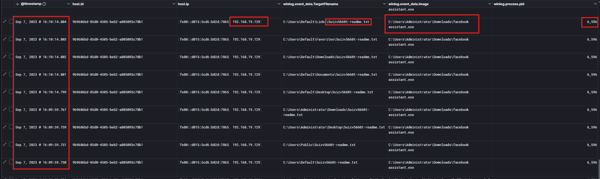
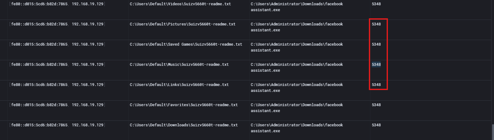
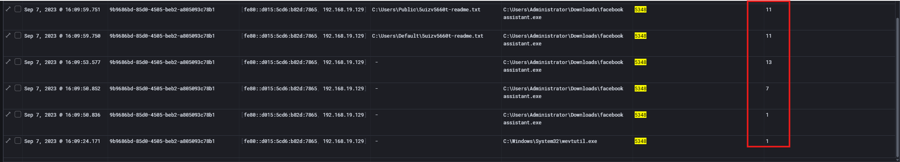
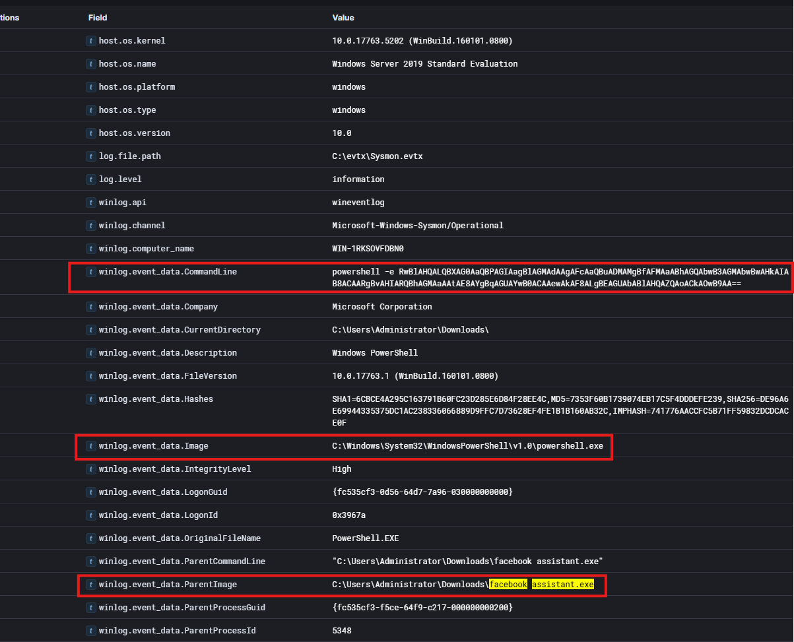
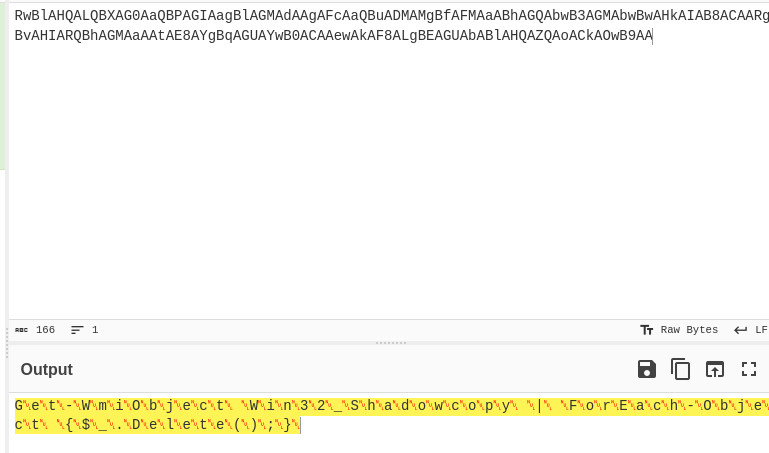
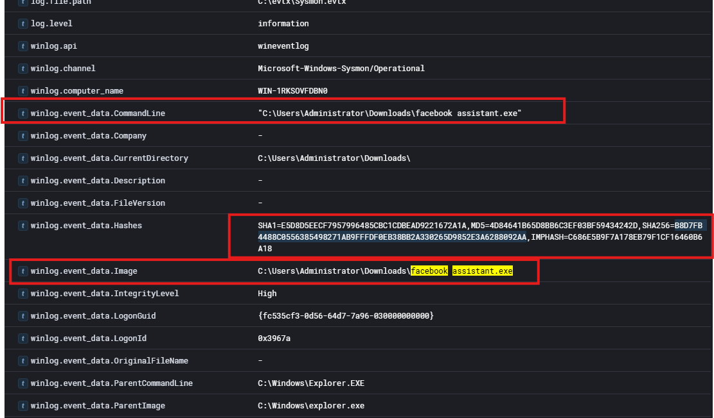
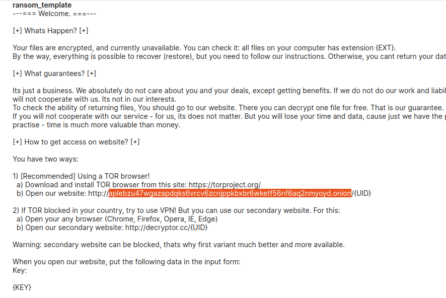

Scenario
You are a Threat Hunter working for a cybersecurity consulting firm. One of your clients has recently been affected by a ransomware attack that resulted in the encryption of multiple employee machines. Affected users reported the presence of a ransom note on their desktop along with a modified desktop background.
As part of the investigation, you have been provided with access to a Splunk SIEM environment containing Sysmon event logs from one of the compromised systems. Your objective is to analyze the available telemetry and extract as much information as possible to identify the ransomware activity, determine its origin, and uncover key indicators of compromise.
Executive Summary
This investigation analyzed endpoint logs to identify and assess a ransomware infection on a compromised Windows host (192.168.19.129). The analysis began by reviewing Sysmon Event ID 11 (File Creation) logs, which revealed that a suspicious executable, Facebook assistant.exe, created a ransom note named 5uizv5660t-readme.txt. This activity strongly indicated ransomware execution.
Further analysis identified the responsible process ID (PID 5348) and confirmed that the executable originated from the user’s Downloads directory, suggesting initial infection likely occurred through a downloaded file. Pivoting on this process uncovered additional malicious behaviors, including process spawning, DLL loading, and registry modifications, a common indicators of ransomware activity.
A key discovery was an obfuscated PowerShell command executed by the ransomware, which, once deobfuscated, was found to delete Volume Shadow Copies (VSS). This action prevents system recovery and is a well-known ransomware tactic to ensure victims cannot restore encrypted data.
To validate the threat, the SHA256 hash of the executable was extracted:
B8D7FB4488C0556385498271AB9FFFDF0EB38BB2A330265D9852E3A6288092AA,
enabling correlation with known malware signatures and threat intelligence sources.
Finally, external analysis using malware intelligence platforms revealed the attacker’s Tor (.onion) domain, which serves as the communication and payment portal for victims:
aplebzu47wgazapdqks6vrcv6zcnjppkbxbr6wketf56nf6aq2nmyoyd.onion
Overall, the findings confirm a ransomware infection involving execution of a malicious user-downloaded file, system modification for persistence and impact, and deliberate disruption of recovery mechanisms, aligning with typical ransomware attack patterns.
Q1:
To begin your investigation, can you identify the filename of the note that the ransomware left behind?
To identify the filename of the ransomware note left behind on the compromised system, I began by analyzing file creation events within the dataset. In Windows logging, Event ID 11 corresponds to file creation activity, making it a reliable method for identifying files dropped by malicious processes.
Using this knowledge, I filtered the logs for file creation events with the following query:
event.code:11This returned a large number of results, many of which were legitimate system operations. To reduce noise and focus on suspicious activity, I excluded common benign system processes, specifically svchost.exe, which frequently generates file creation events during normal system behavior.
The refined query used was:
event.code:11 and not winlog.event_data.Image:"C:\\Windows\\System32\\svchost.exe"After applying this filter, several suspicious entries appeared in the results.

From the output, we observe that the process Facebook assistant.exe created a file named: 5uizv5660t-readme.txt
This activity occurred on the host 192.168.19.129.
Based on this evidence, it is highly likely that Facebook assistant.exe is the malicious executable responsible for the ransomware activity and for dropping the ransom note on the compromised system.
-----
Q2:
After identifying the ransom note, the next step is to pinpoint the source. What's the process ID of the ransomware that's likely involved?
After identifying the ransom note created by Facebook assistant.exe, the next step was to determine which process instance generated the file. This can be accomplished by reviewing the Process ID (PID) associated with the file creation event.
Since the ransom note was discovered through Event ID 11 (File Creation) logs, the same event contains the winlog.event_data.ProcessId field, which identifies the process responsible for creating the file.
To determine the PID, I added the winlog.event_data.ProcessId field to the results table while reviewing the file creation events associated with the ransom note.

From the results, we can see that the file 5uizv5660t-readme.txt was created by the process Facebook assistant.exe, which is associated with the following processID: 5348.
-----
Q3:
Having determined the ransomware's process ID, the next logical step is to locate its origin. Where can we find the ransomware's executable file?
From the previously observed file creation events, we can already see the executable path associated with the ransomware process. The logs show that the suspicious executable facebook assistant.exe was executed from the following directory:
C:\Users\Administrator\Downloads\facebook assistant.exeTo further investigate the activity of this process, I pivoted on the identified Process ID (5348) to review all events generated by the same process. This was done using the following query:
winlog.event_data.ProcessId:5348This query allows us to identify additional behaviors and actions performed by the ransomware process.

By adding the event.code field to the results, we can observe multiple types of activity associated with the process, including:
- Event ID 1 – Process creation
- Event ID 7 – DLL loading
- Event ID 13 – Registry value modifications
These events indicate that the executable was actively interacting with the system by spawning processes, loading libraries, and modifying registry values which is behavior commonly associated with ransomware execution and system modification.
----
Q4:
Now that you've pinpointed the ransomware's executable location, let's dig deeper. It's a common tactic for ransomware to disrupt system recovery methods. Can you identify the command that was used for this purpose?
After identifying the ransomware executable facebook assistant.exe, the next step was to analyze the child processes spawned by this executable.
To investigate this behavior, I searched for events where the ransomware executable appeared as the ParentImage, which allows us to identify processes that were spawned by the malicious executable.
This pivot revealed an interesting result: the ransomware created a PowerShell process:

Upon reviewing the CommandLine field associated with this process, we can observe an obfuscated PowerShell command, which immediately raises suspicion. Obfuscation is frequently used by attackers to evade detection and make manual analysis more difficult.
To better understand the command's functionality, I copied the obfuscated string and deobfuscated it using CyberChef, which revealed the following command:
Get-WmiObject Win32_Shadowcopy | ForEach-Object {$_.Delete();}
From the above, we can observe the following:
| Part | Meaning |
|---|---|
Get-WmiObject Win32_Shadowcopy |
Queries WMI for all Volume Shadow Copies (VSS snapshots) |
| |
Pipes output into the next command |
ForEach-Object |
Loops through each shadow copy |
{ $_.Delete(); } |
Deletes each shadow copy |
Deleting shadow copies prevents system recovery and forensic rollback. This behavior is extremely common in: Ransomware, , Destructive malware, and Post-exploitation cleanup
Attackers remove VSS so victims cannot restore files from snapshots.
---
Q5:
As we trace the ransomware's steps, a deeper verification is needed. Can you provide the sha256 hash of the ransomware's executable to cross-check with known malicious signatures?
To further verify the malicious executable, the next step was to retrieve the hash of the ransomware file. Hash values are commonly used in threat intelligence to uniquely identify malware samples and compare them against known malicious signatures in databases.
To locate the hash value, I examined the Sysmon process creation event where the ransomware executable appears as the Image (process):
C:\Users\Administrator\Downloads\facebook assistant.exeWithin the event details, Sysmon provides a Hashes field which includes several different hash types such as SHA1, MD5, and SHA256.
From the Hashes field, we can extract the SHA256 hash associated with the ransomware executable.
Answer: B8D7FB4488C0556385498271AB9FFFDF0EB38BB2A330265D9852E3A6288092AA
This hash uniquely identifies the ransomware binary and can be used to correlate the sample with known REvil/Sodinokibi ransomware signatures or other threat intelligence sources.

----
Q6:
One crucial piece remains: identifying the attacker's communication channel. Can you leverage threat intelligence and known Indicators of Compromise (IoCs) to pinpoint the ransomware author's onion domain?
After identifying the SHA256 hash of the ransomware executable, the next step was to leverage threat intelligence to gather additional indicators associated with the malware sample.
To accomplish this, I submitted the ransomware's SHA256 hash to tria.ge, a malware analysis platform.
After opening the analysis report, I reviewed the artifacts, focusing specifically on files dropped by the ransomware. Within the report, the ransom note content was available for inspection.

Upon examining the ransom note, we can identify the Tor (.onion) domain provided by the ransomware operators. This domain is used by victims to access the attacker’s payment portal and obtain instructions for decrypting their files after paying the ransom.
The onion domain identified in the ransom note is:
aplebzu47wgazapdqks6vrcv6zcnjppkbxbr6wketf56nf6aq2nmyoyd.onionThis domain serves as the communication channel between the victim and the ransomware operators, allowing victims to negotiate payment and retrieve decryption keys.
Indicators of Compromise (IOCs)
| Indicator Type | Indicator Value | Description |
|---|---|---|
| File Name | Facebook assistant.exe |
Malicious ransomware executable |
| File Path | C:\Users\Administrator\Downloads\facebook assistant.exe |
Execution location of ransomware |
| Ransom Note | 5uizv5660t-readme.txt |
File dropped by ransomware |
| Process ID | 5348 |
Associated ransomware process |
| Host IP | 192.168.19.129 |
Compromised system |
| SHA256 Hash | B8D7FB4488C0556385498271AB9FFFDF0EB38BB2A330265D9852E3A6288092AA |
Unique identifier of malware sample |
| PowerShell Command | Get-WmiObject Win32_Shadowcopy | ForEach-Object {$_.Delete();} |
Deletes Volume Shadow Copies (prevents recovery) |
| Onion Domain | aplebzu47wgazapdqks6vrcv6zcnjppkbxbr6wketf56nf6aq2nmyoyd.onion |
Attacker communication/payment portal |